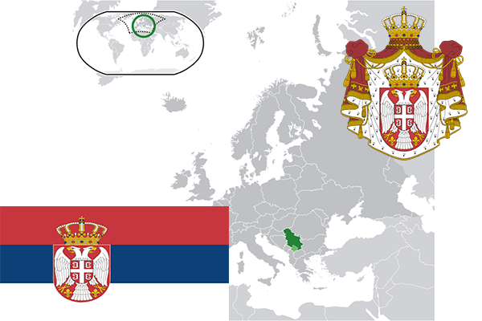

To`liq nomi: Serbiya Respublikasi
Region: Janubi-sharqiy Yevropa
Qonunchilik shakli: Respublika
Mustaqillik kuni: 5-iyun 2006-yil
Poytaxt: Belgrad
Maydoni: 88 407 км²
Chegaradosh davlatlari: Vengriya, Ruminiya, Bolgariya, Makedoniya, Albaniya, Chernogoriya, Xorvatiya, Bosniya.
Aholisi: 7 041 599 (2016-yil)
Aholi zichligi: 80 /км²
Aholining o`rtacha yoshi: 75,88 yil
Rasmiy tili: Serb tili
Dini: Xristian
Pul birligi: Serbiya dinori
Telefon prefiksi: +381
Internet domen: .rs
Xalqaro tashkilotlarga a`zoligi: BMT
Dengiz va okeanlarga chiqishi: O’rta Yer dengizi
YIM: Butun: $42.3 mlrd.(2017-yil) Jon boshiga: $6,052
Yirik shaharlari: Belgrad, Noviy Sad, Nis